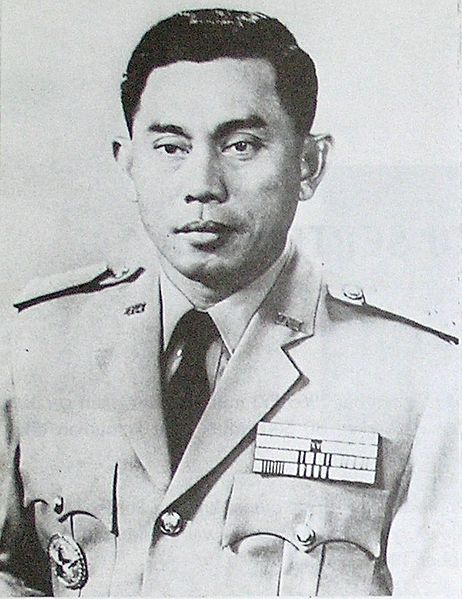
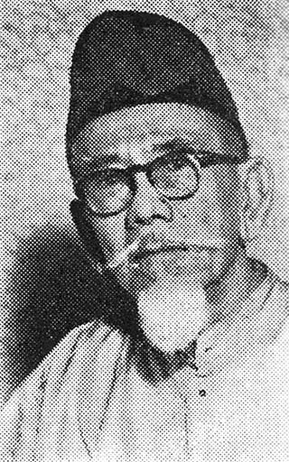

| Ahmad Yani | Agus Salim |
|---|---|
|  |  |
|
Jenderal TNI Anumerta Ahmad Yani lahir di Purworejo, Jawa Tengah, 19 Juni 1922 dan meninggal di Lubang Buaya, Jakarta, 1 Oktober 1965 pada umur 43 tahun. Ia adalah komandan Tentara Nasional Indonesia Angkatan Darat, dan dibunuh oleh anggota Gerakan 30 September saat mencoba untuk menculik dia dari rumahnya. Setelah Kemerdekaan Yani bergabung dengan tentara republik yang masih muda dan berjuang melawan Belanda. Selama bulan-bulan pertama setelah Deklarasi Kemerdekaan, Yani membentuk batalion dengan dirinya sebagai Komandan dan memimpin kepada kemenangan melawan Inggris di Magelang. Yani kemudian berhasil mempertahankan Magelang melawan Belanda ketika ia mencoba untuk mengambil alih kota, mendapat julukan ‘Juru selamat Magelang’. Sorot lain yang menonjol karier Yani selama periode ini adalah serangkaian serangan gerilya yang diluncurkan pada awal 1949 untuk mengalihkan perhatian Belanda sementara Letnan Kolonel Soeharto dipersiapkan untuk Serangan Umum 1 Maret yang diarahkan pada Yogyakarta. |
Haji Agus Salim, lahir dengan nama Masyhudul Haq, lahir di Koto Gadang, Agam, Sumatra Barat, Hindia Belanda, 8 Oktober 1884 dan meninggal di Jakarta, Indonesia, 4 November 1954 pada umur 70 tahun. Ia adalah seorang pejuang kemerdekaan Indonesia. Haji Agus Salim ditetapkan sebagai salah satu Pahlawan Nasional Indonesia pada tanggal 27 Desember 1961 melalui Keppres nomor 657 tahun 1961. Pada tahun 1915, Salim bergabung dengan Sarekat Islam (SI), dan menjadi pemimpin kedua di SI setelah H.O.S. Tjokroaminoto. Peran Agus Salim pada masa perjuangan kemerdekaan RI antara lain:
Di antara tahun 1946-1950 ia laksana bintang cemerlang dalam pergolakan politik Indonesia, sehingga kerap kali digelari “Orang Tua Besar” (The Grand Old Man). Ia pun pernah menjabat Menteri Luar Negeri RI pada kabinet Presidentil dan pada tahun 1950 sampai akhir hayatnya dipercaya sebagai Penasehat Menteri Luar Negeri. |